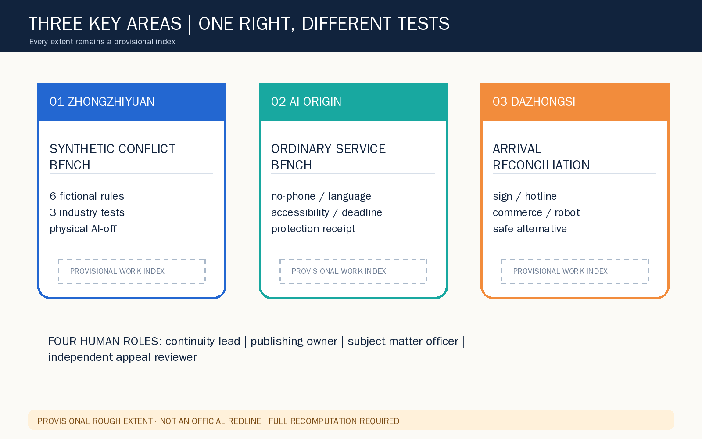
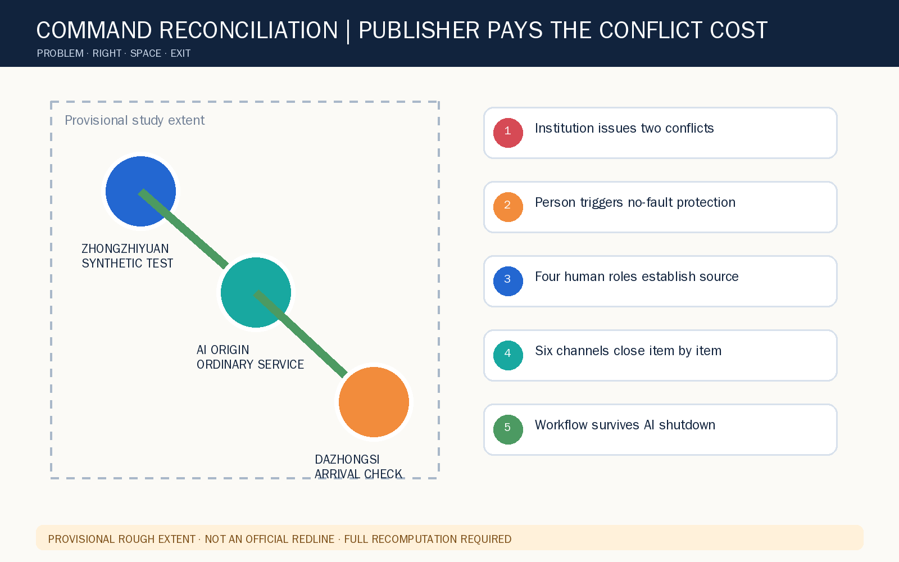
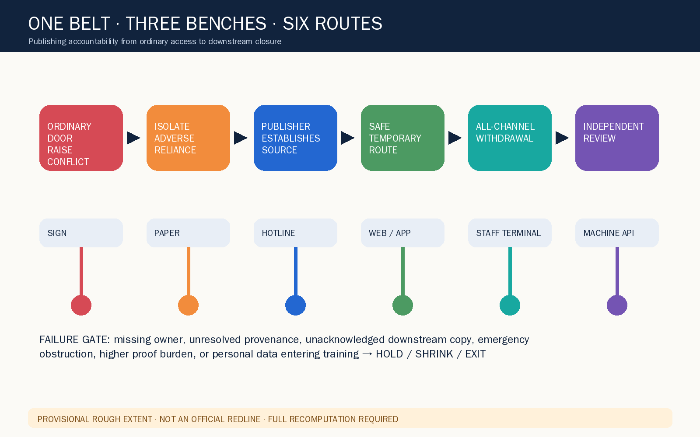
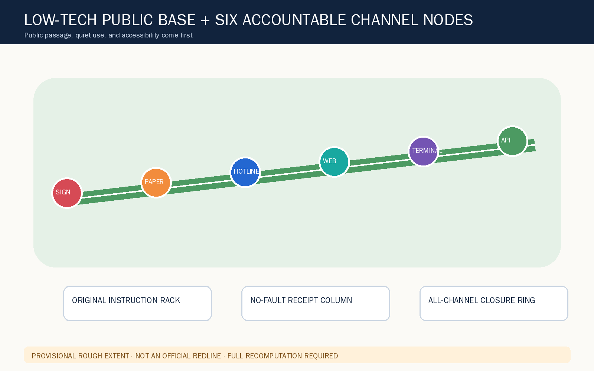
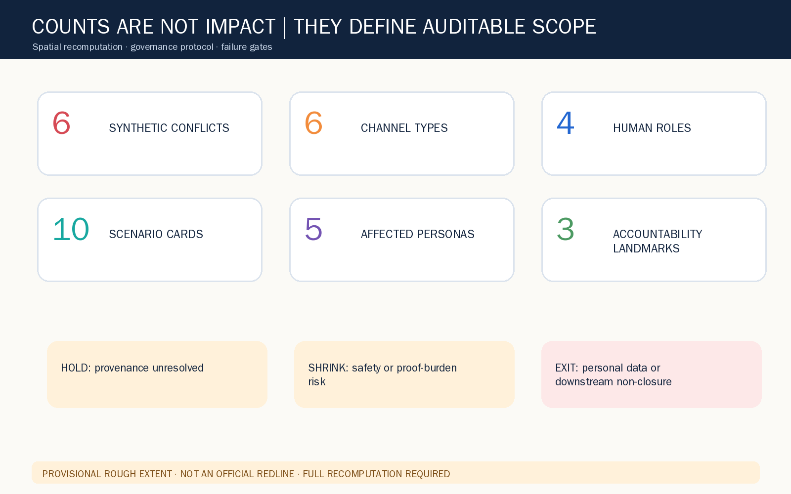

KEY AREAS

People do not absorb the cost of contradictory institutional channels

Research principle → overall service chain → three rehearsals. Provisional boundaries are indexes only.
HOLDSHRINKEXIT
Four concept supports: synthetic research, low-tech open space, publishing accountability, ordinary access; no statutory land-use claim.


P1 synthetic rules; P2 accessible ordinary door; P3 all-channel closure; P4 de-identified learning.
10 scenarios / 5 personas / 3 synthetic industry tests / 4 human roles / complete AI-off.
agent.1 identity; agent.2 seven-case ecosystem; agent.3 ten scenarios/five personas; agent.4 three landmarks; agent.5 accountability culture; agent.6 annual operations.

Deterministic, spatial, visual, and professional gates are persisted; human visual QA is performed separately.
Announcement, taskbook, site package, source registry, provisional geometry; no external images or remote assets.
No official boundary/control/ownership/professional authority; unresolved source, safety obstruction, added proof burden, or personal data in training → HOLD / SHRINK / EXIT.